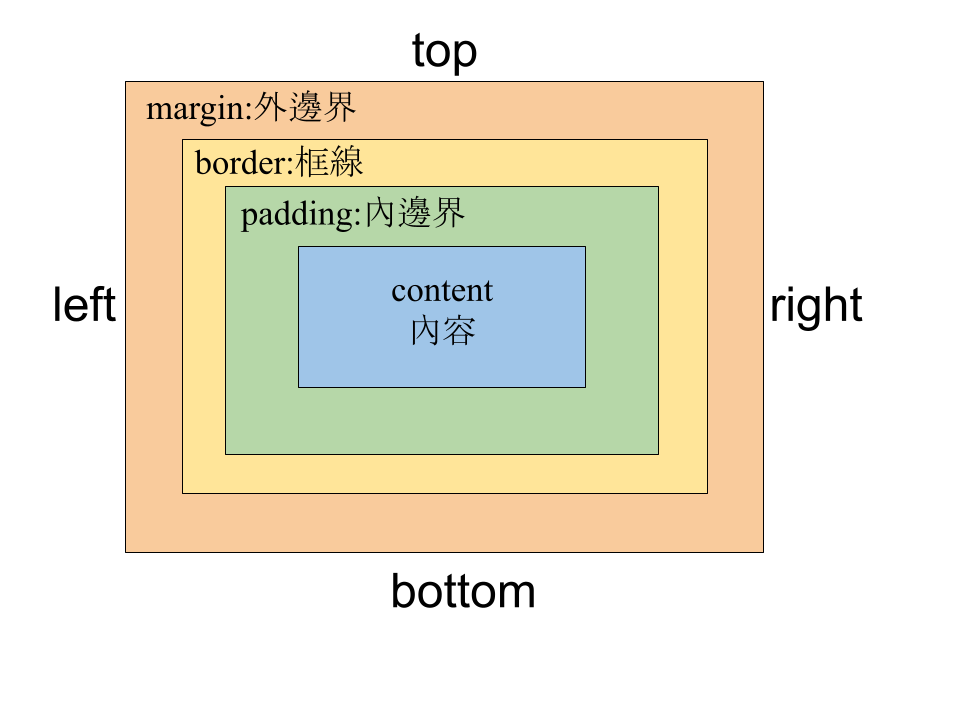

網頁設計第六堂課:CSS(二)
Lesson 6
類別：網頁設計
一、class類別選擇器
在第三堂課使用CSS時，我們使用元素選擇器，例如:h1{...}和p{...}，可以針對所有h1標籤和所有p標籤的內容作外觀(如顏色、大小、字體...等)樣式的設定。
但如果我們只要針對某一個部分，且此部分的樣式設定會重覆出現，此時我們可以在該部分的標籤內增加class類別，並在CSS中針對該類別作樣式的設定。
<!DOCTYPE html>
<html lang="zh-Hant-TW">
<head>
<meta charset="UTF-8">
<title>CSS(二)exercise</title>
<meta name ="description" content="CSS(二) exercise">
.title {
font-family: Arial;
color:red;
font-size:24px;
width: 360px;
font-weight:bolder;
}
.text1 {
font-size: 18px;
width: 200px;
color: blue;
line-height: 1.5;
}
.text2 {
font-family: Arial;
font-size: 36px;
width:300px;
background-color:green;
color: white;
line-height: 1.5;
text-align: center; }
</style>
</head>
<body>
<h1 class="title">Taoyuan Municipal Guanyin Senior High School</h1>
<p class="text1">物理科</p>
<p class="text2">林仟弘</p>
</body>
</html>
這個例子定義了三個class類別：.title 、.text1、.text2。
.title 被應用於 h1 元素，而 .text1和.text2分別應用於兩個 p 元素。
三個類別分別設置了文本的字體大小、顏色和對齊方式、最大寬度以及背景色...等。
用class類別的優點是可以讓您在整個網站中重複使用相同的樣式集合。如果您需要更改樣式，只需更改樣式集合中的一個定義，而不是每個元素的樣式。
二、元素邊界和框線
修改上面範例中的.text1內容，增加margin、padding和border，並比較差別
修改的CSS代碼如下:
.text1{
font-size: 18px;
width: 200px;
color: blue;
line-height: 1.5;
margin-top:10 px;
margin-bottom:20 px;
padding-left:15 px;
padding-right:5 px;
border: 2px solid red;
}
三、CSS互動功能
互動範例連結1、cursor:
cusor可改變滑鼠鼠標形狀，當鼠標移至該元素時會顯示設定的鼠標形狀，請於CSS中增加下列代碼進行練習。
.title{
cursor: pointer;
}
.text1{
cursor: progress;
}
.text2{
cursor: move;
}
其它常見的cursor
pointer‚
progress‚
move‚
help‚
wait‚
crosshair‚
not-allowed‚
zoom-in‚
grab
2、hover:
hover的功能是當滑鼠移到該元素時，讓元素外觀作改變，請於CSS中增加下列代碼進行練習。
.title:hover{
color:blue
}
.text1:hover{
opacity:0.4
}
.text2:hover{
background-color:yellow;
}
3、active:
active的功能是當滑鼠點擊該元素時，讓元素外觀作改變，請於CSS中增加下列代碼進行練習。
.text2:active{
cursor: pointer;
background-color:pink;
}